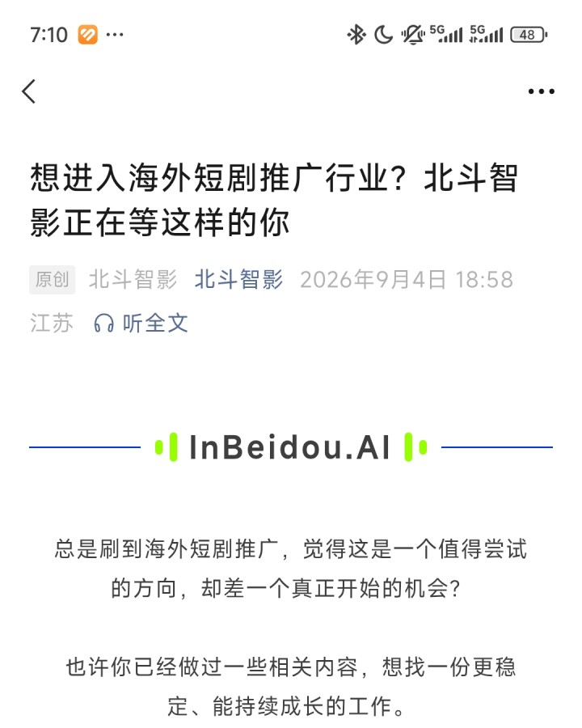
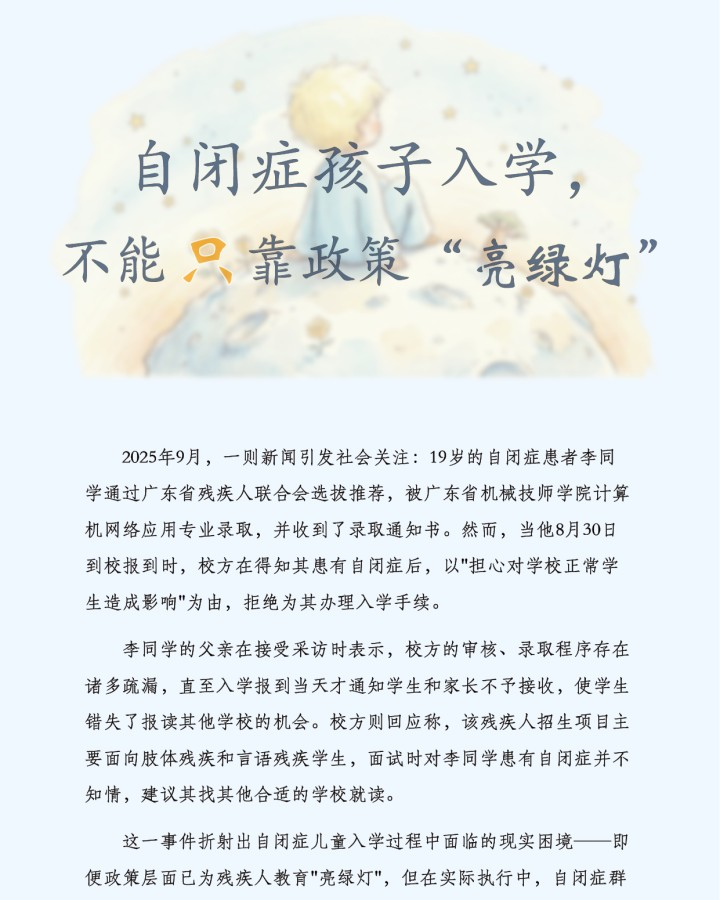

观察与策划
从具体需求出发，梳理问题、探索方向。实践涉及产品与 IP 宣传、新闻选题和用户反馈。


从项目探索，到文字与影像表达。
点击卡片，查看项目说明与完整作品。
从具体需求出发，梳理问题、探索方向。实践涉及产品与 IP 宣传、新闻选题和用户反馈。
采写、排版、摄影、剪辑。使用 PS、Canva、Illustrator、InDesign、PR 与剪映完成内容呈现。
借助 AI 探索方向、生成文字与视觉参考，将想法呈现为可交互网页，并把重复工作整理成可复用流程。
欢迎交流项目、想法与工作机会